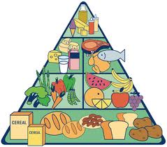

Introduccion
La nutrició es una parte muy importante en la formación de las personas, lo que aprendimos fué que la nutrición que una persona debe llevar tiene que ser balanceada, no debe comer mucho ni tampoco poco muy poco, debe ser un punto intermedio de esas "de todo un poco".Es importante tener onocimiento de la piramide del buen comer para llevar una vida más saludable.
